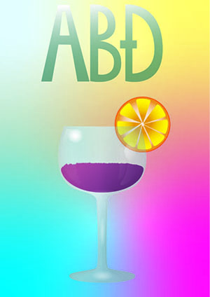
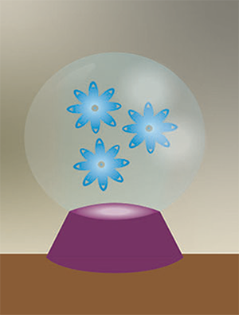
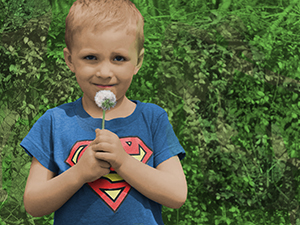
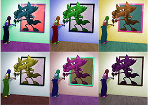
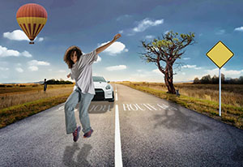

1. Font
Izrada vlastitog fonta u programu FontForge.

2. Bézierove krivulje i tracing
Rad u Adobe Illustratoru – crtanje pomoću Bézierovih krivulja i trasiranje slike.

3. Boja i transformacije
Korištenje boja, prijelaza i alata za transformaciju u Illustratoru.


4. Gradijenti i transparencija
Primjena gradijenata i efekta prozirnosti.
 Projektni zadatak 1
Obuhvaća vježbe 1–4: font, tracing, boje, gradijenti i transparencija.

5. Retuširanje
Uklanjanje nedostataka na fotografijama u Photoshopu.


6. Koloriranje
Dodavanje boje crno-bijelim fotografijama.
 7. Fotomontaža
Kreiranje kompozicije kombiniranjem više fotografija.
Projektni zadatak 2
Obuhvaća vježbe 5–7: retuširanje, koloriranje, fotomontaža...

8. Kinemagraf
Stvaranje kinemagrafa – animirane slike s fiksnim dijelovima.

9. Video obrada
Video montaža u Adobe Premiere Pro – izrezivanje, efekti, tekst.
10. i 11. Web stranica – struktura
Izrada osnovne strukture web stranice u HTML-u pomoću Notepad++, dodavanje CSS-a i završni izgled web stranice..
Moja web stranica